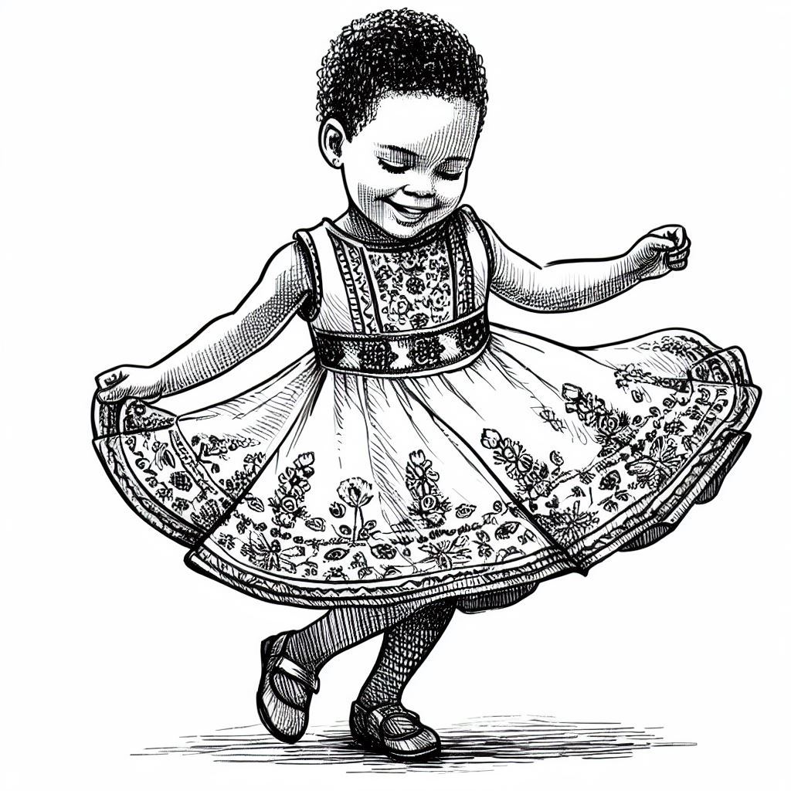
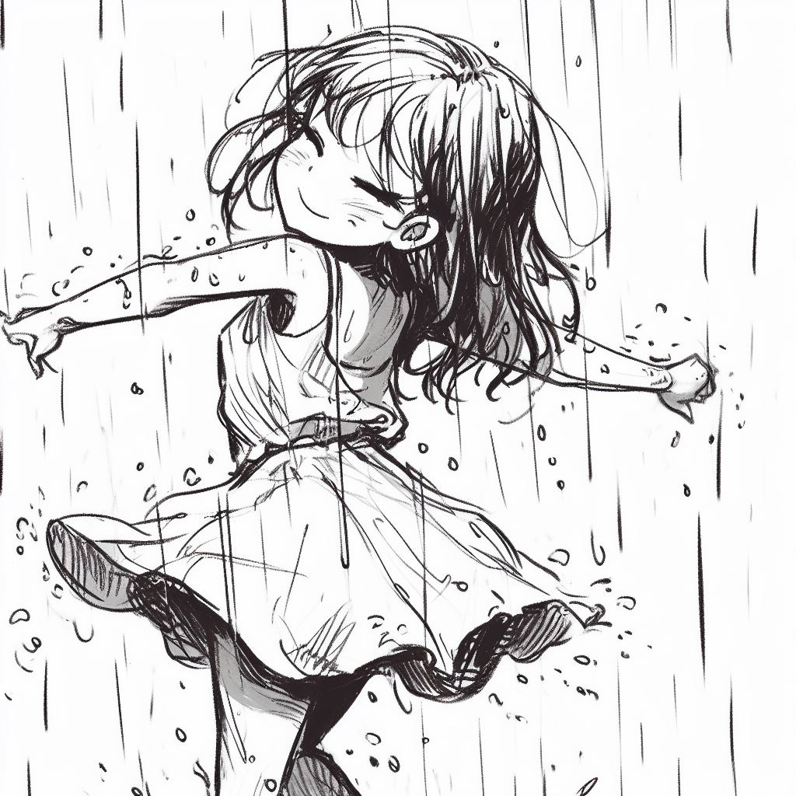
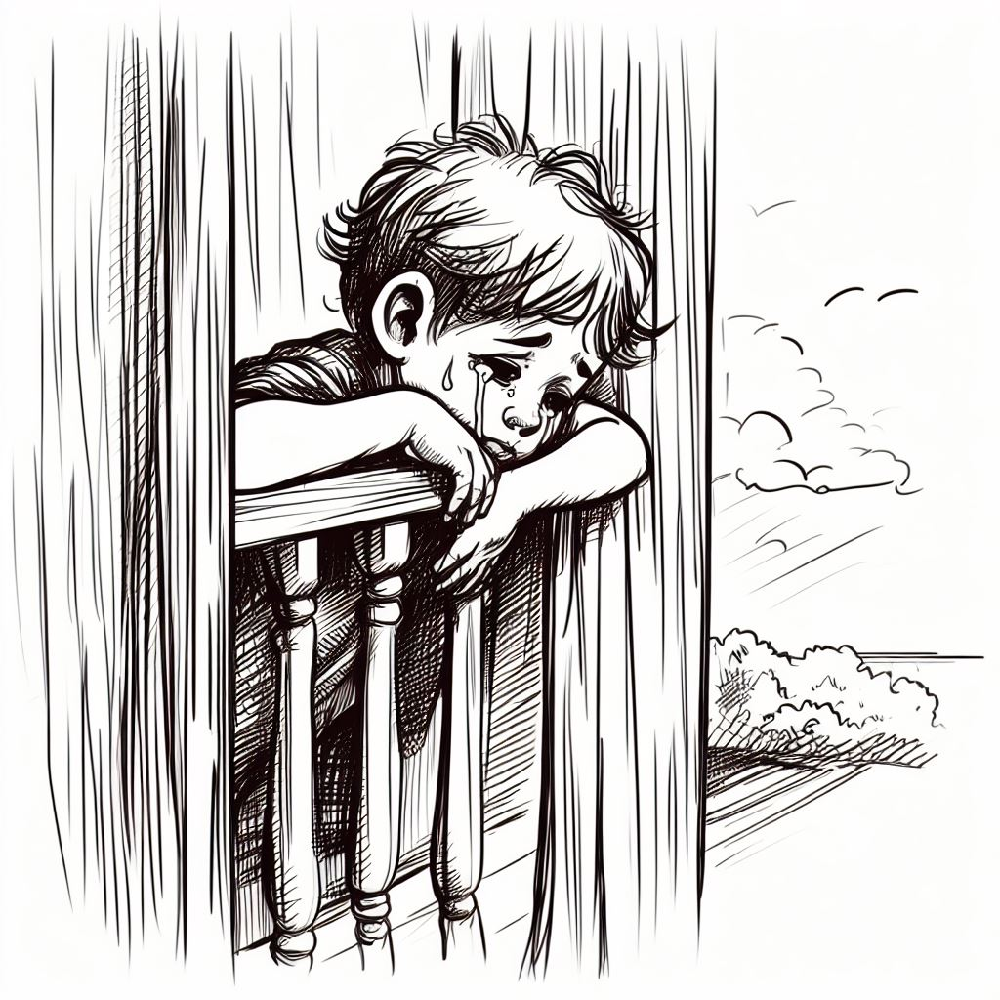

Vestido novo bordado
A menina na frente do espelho
Feliz dança, rodopia
Seu vestido novo, seu tesouro
De retalhos bordados a mão
Olha no espelho
Examina com zelo
Cada desenho bordado
São como sonho pintado
Rodopia, dança, canta
Se encanta
Com seus traços femininos
Sorri desabrochando
Um botão em flor tornando
Com seu vestido bordado
Dança se vendo princesa
De um lindo sonho encantado
fim...

Cantando na chuva
Cai a chuva na calçada
E a menina já molhada
Conta os pingos a cair
No ritmo lento o som
Vai mudando o seu sonhar
Era dó agora é mi
A menina na calçada
Com a roupa já molhada
Canta a chuva pim, pim, pim
O trem
La vem o trem
Trazendo a alegria de alguns
De outros levando saudades
Apitando alto ele vem
Tão alto o ronco dos trilhos
Lançando faíscas no chão
Traz os sonhos, levam sonhos
Nele tantos vêm e vão
Acenos, abraços e gritos
Sorriso, choro, Multidão
Tantos nele vêm e vão
Apitando ele se vai
Soltando faíscas no chão
Queimando em meu coração
fim...

Esperando Daniela
O menino na janela
Esperando Daniela
Partiu deixando o menino
Debruçado na panela
A bela Daniela
Olhando pela janela
Não via sol, nem caracol
Só queria ela
A bela Daniela
Só se ouvia o soluçar
Do menino a esperar
Por ela...
A bela Daniela
Fim...\
Juliana
Juliana sai na chuva
Põe sua capa e sua luva
Põe galocha e come uva
Põe a galocha, sorri, desabrocha
Juliana debocha
Da menina triste que não tem galocha
Que não te luva, não come uva
Mas a menina triste tem guarda-chuva
Já pode sim comer uva
Só não tem capa e galocha
A menina triste debocha
Já não é triste a menina
Fim...
A polenta
A polenta pula na panela
Pula lenta, no fogão a polenta
Cheira invade e sacia
Pulando, pulando, acalenta
Barriga grita roncando
E cheirando a polenta pula lenta
Grita tão alto a barriga
Para polenta! Não pula!
Para, cheira no prato
Descansa, esfria...
Barriga grita, boca devora
A polenta que desce macia
Que cheira, invade e sacia
A viola
De cabeça baixa
Chora a menina
A menina chora
Por ser pequenina
No pequeno banco
Segura a viola
Vendo o seu irmão
Que tão feliz cantarola
Por que a menina chora?
Porque a não consegue tocar a viola
Fim...
A feira
Camila vai a feira
Com uma sacola na mão
Compra alfaces e cebolas
E uma bacia de limão
Abobrinha bem verdinha
Saborosa pra comer
Com arroz e beterraba
Tem que comer pra crescer
Fica forte e inteligente
Cresce sem doença ter
Precisa saber que é importante
Muitos vegetais comer
Camila volta contente
E tem um recado pra dar
Criança inteligente
Come bem sem reclamar
fim...
A boneca de Carol
Carol tem uma boneca
Seu nome é Josefina
E é bastante sapeca
A boné da menina
Vão as duas à pracinha
Um piquenique fazer
Levam balas, pirulitos
Alguns doces pra comer
Quem já viu boneca esperta?
Até parece menina
Anda, fala e da risada
A boneca pequenina
Vão cantando pela estrada
Logo a praça irão chegar
Carol ensina a boneca
Uma cantiga cantar
Felipe
Felipe canta
Sentado no chão
Com olhar já cansado
Vê girar o pião
Já se sente cansado
De tanto brincar
A mamãe na janela
Se põe a gritar
Felipe! Vem logo!
O seu banho tomar
A mesa está pronta
Logo vamos jantar
Menino obediente
E asseado também
Sempre traz muita alegria
Não envergonha ninguém
Fim...